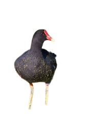
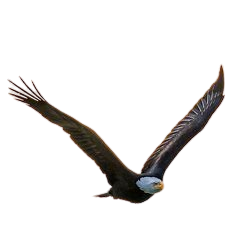

| Éspecies | Imagens | Caracteristicas |
|---|---|---|
| Galinha d'água |

|
A galinha-d'água mede aproximadamente 37 centímetros de comprimento. Apresenta um escudo facial vermelho, faixas brancas nos flancos, plumagem negra e patas amarelas. Os imaturos são castanho-escuros com abdome mais claro, sem o escudo facial vermelho. Alimenta-se de uma grande variedade de material vegetal, além de pequenos animais aquáticos. |
| Águia |

|
águia é o nome comum dado algumas aves de rapina da família Accipitridae, geralmente de grande porte, carnívoras, de grande acuidade visual. O nome é atribuído a animais pertencentes a gêneros diversos e não corresponde a nenhum clade taxonômico. Por vezes, dentro de um mesmo gênero ocorrem espécies conhecidas popularmente por gavião ou búteo. Suas principais presas são: coelhos, esquilos, cobras, marmotas e outros animais, principalmente roedores, de pequeno porte. Algumas espécies alimentam-se de ovos de outros pássaros e peixes. |